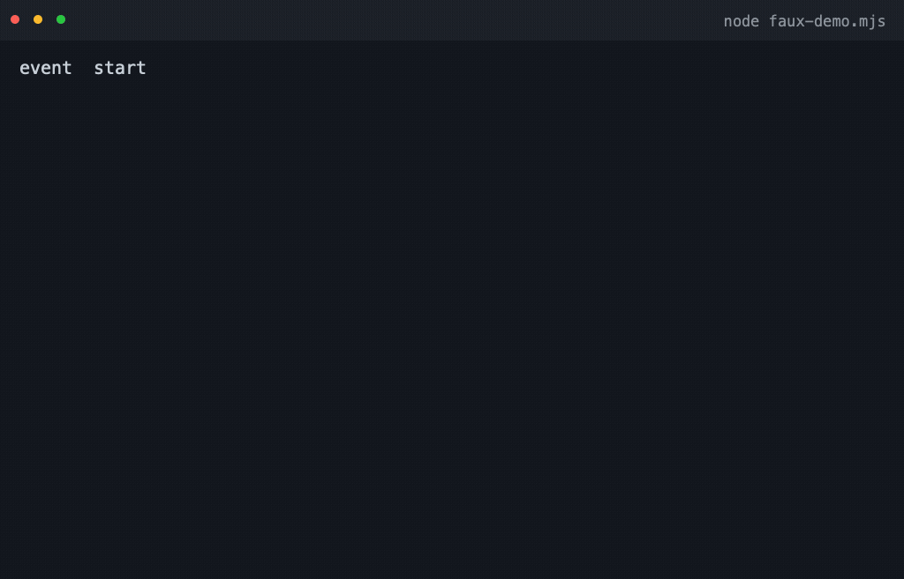
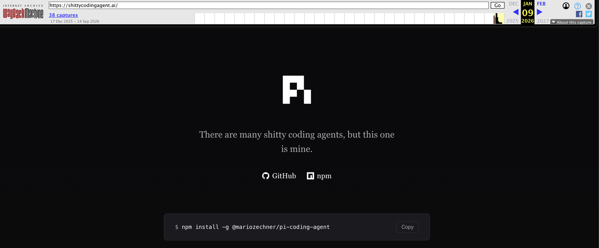

积木，而非成品：Pi Agent Harness 的克制与精妙
Contents
上一篇文章《给大脑配一副好鞍具》里，Pi 交出的成绩单是这样的：9 秒修完 3 个 bug，6 次工具调用，3375 个 token，成本 0.00007 美元。五款 agent harness 里最快，也最便宜。
这篇文章想把 Pi 拆开看看，把内部机制往深里挖一层。我想搞清楚两个问题：它是怎么一步步长成今天这样的，以及我们敲下一行命令之后，它内部究竟发生了什么。
第一个问题的答案不在文档里，在 git 历史里。所以先去翻它的提交记录。
一、它一开始只有三个包
1.1 首提交里的三件套
翻到 2025-08-09 的第一个 commit，里面只有三个包：pi-tui（差分渲染的终端 UI 库）、pi-agent（带会话持久化的 agent 库），以及一个叫 pi 的 CLI。第三个 pi 跟 coding agent 毫无关系，它的 README 第一段是：
Deploy and manage LLMs on GPU pods with automatic vLLM configuration for agentic workloads.
用法是 pi start Qwen/Qwen2.5-Coder-32B-Instruct。“Pi” 这个名字最早属于一个在 GPU 机器上部署模型的工具。后来编码 agent 越长越大，反过来继承了这个名字。所以别问它是不是圆周率，它更像“某台跑模型的机器”的昵称（官方从没解释过，这是我的考古推测）。
一周之后，pi-ai 被抽了出来。2025-08-17 的 commit 写着：feat(ai): Create unified AI package with OpenAI, Anthropic, and Gemini support。这是 Pi 的第一次分层，把“模型怎么接”从 agent 里剥出去，单独成了一个包。
两个月后，2025-10-17，coding-agent 出现。产品层有了。
1.2 一年之后，十一个包
把每个包第一次出现的日子排一排：
| 日期 | 包 | 起因 |
|---|---|---|
| 2025-08-09 | pi-tui / pi-agent / pi(pods) | 首提交，三件套。pods 已在 2026-04 删除 |
| 2025-08-17 | pi-ai | 统一 OpenAI / Anthropic / Gemini |
| 2025-10-17 | coding-agent | 把 agent 做成产品 |
| 2026-06-18 | server | 会话要能被远程接进来。当时叫 orchestrator，07-21 改名 |
| 2026-07-25 | evals | 要能跑评测 |
| 2026-07-30 | protocol | 远程会话要有个通信协议 |
| 2026-07-31 | client | 不挑传输方式（WebSocket、Unix socket 都行） |
| 2026-08-05 | telemetry | 遥测抽包 |
| 2026-08-05 | session-backends | 存储后端抽出来单列。原名 storage，07-21 建包，08-05 改名 |
| 2026-08-28 | chord | 把插件组装成应用的运行时 |
一年时间，三个包长到十一个。中间有进出，pods 被删了，storage 改名成了 session-backends，表里都标了。这条时间线基本是被需求推着走的，很少看到先画一套架构再落地。模型要统一，就抽 pi-ai。要有产品，就长出 coding-agent。会话要能被别人接进来，就有了 server 和 protocol。
也有例外：上下文压缩在动手前两天先写了研究文档，pi-tui 至今留着一份 tui-plan.md，开头就说它记的是设计讨论里定下来的东西。
那些机制也是这么长出来的：
| 日期 | 机制 |
|---|---|
| 2025-12-04 | 上下文压缩 |
| 2026-01-02 | 会话树（原地分支，v0.31.0 发布） |
| 2026-03-29 | faux provider，用来在没有模型的情况下测整个循环 |
连“Pi 是什么”也是长出来的。它对自己的称呼改过好几轮：2025 年 11 月中旬叫 “a radically simple and opinionated coding agent”，2026 年 1 月底换成 “minimal terminal coding harness”，2026 年 5 月第一次把 “Pi Agent Harness” 写进标题（当时标题里还拖着一个尾巴：“# Pi Agent Harness Mono Repo”），到 2026 年 6 月才精简成今天这句。
长到最后，形状是这样。箭头从使用方指向被使用方，被依赖的那一方对上面一无所知。
1 | pi-coding-agent（CLI：interactive / print · json / rpc / SDK） |
pi-tui 是这张图里唯一的旁支：它不依赖任何其他内部包，只是被产品层拿去渲染界面。
每一层都切在自己的 package 边界上，多数层在 npm 上能单独装，只有 evals 没发布。有意思的是 commit message 里给的理由全是内部需要，统一多 provider、把遥测抽出来、给目录改名，没有一条写着“方便别人复用”。但结果摆在那里：想要 agent 循环就拿 pi-agent-core，想要终端渲染再带上 pi-tui，产品层自己写就行。这也是它敢管自己叫“库”的底气。
说完它是怎么长成的，回到第二个问题：敲下一行命令之后，里面究竟发生了什么。
二、一次请求的旅程
还是上一篇那条命令：
1 | pi -p "修复这个仓库里的 bug，让 npm test 全部通过" \ |
-p 是非交互模式，跑完就退出。按下回车之后，我们跟着这行字走一趟，看它每一步变成了什么。
2.1 它把 prompt 变成了什么
按下去之后的第一件事，是把上面那行字变成一份发给模型的东西。下面这份是真抓的：把 provider 地址指到本机一个假服务，让 pi 照常发请求，落在磁盘上的请求体原样抄下来。
1 | You are an expert coding assistant operating inside pi, a coding agent |
就这么短。真实的提示词是 31 行、2600 个字符，其中工具清单占 4 行，行为准则占 10 行。
准则那一节，10 条里有 7 条是工具自己带上来的：read 要求“用我，别用 cat 和 sed”，edit 交代“多处改动用一次调用”，write 声明“只用于新文件或整篇重写”。剩下三条是框架补的——一条按当前装了哪些工具生成，一条要求回答简洁，一条要求写清文件路径。这一节不是 Pi 手写的。
剩下的绝大部分是路径，指向已安装包里的文档。这一点 4.2 还会再提，它是 Pi 最有趣的设计之一。
（为了页面上不横向滚动，上面这块长行按 76 列折过，安装路径换成了 <安装目录>；文档那一节原有 8 行，折成 4 行并标了省略。所以看着是 39 行，正文说的 31 行是原始行数。）
一份请求在 pi-ai 里叫 Context，只有三样东西：上面这段 system prompt、一份消息列表、一份工具 schema。此刻消息列表里只有一条：
1 | [ |
模型能看到的除了历史，还有一份工具清单。coding-agent 内置的工具一共 8 个：read、bash、edit、write、grep、find、ls，外加一个可选、文档标注为 Windows 用的 powershell。默认激活的只有 read、bash、edit、write 四个。
工具 schema 也一样朴素。四个默认工具里，bash 真正的参数只有两个（type 和 required 是骨架，参数本体在 properties 里），一个必填、一个可选：
1 | { |
任意命令，没有白名单。这个“吓人”的细节先记下，4.3 会解释它为什么是故意的。
还有两个选择不好一眼带过。一个是没有 system 消息类型——系统提示是 Context 的独立字段，不混进历史，所以历史能原样存下来、原样续跑；另一个是这段提示词写死在代码里，本地拼装，不靠远程下发。
2.2 它怎么发出去
同一份东西，到了 DeepSeek 那边长这样。这是这一趟的第一次请求，也是最轻的一次：一个系统提示、一份工具清单、一条用户消息。除了 system 那句和工具描述用 ... 缩掉，其余逐字来自真实请求（工具清单里只留了 bash，实际是四个）：
1 | POST https://api.deepseek.com/chat/completions |
形状先对一下。Pi 的 Context 还是三样东西：系统提示、消息列表、工具清单。到了这里，系统提示变成 messages 里的第一条 role: "system" 消息，工具清单每条都要套一层 function，用户那句话本来就是文本块数组（2.1 里那个形状），搬过来还是原样。名字和嵌套都换了，三样还是那三样。
这份报文里还缺一样东西：缓存标记，一个都没有。DeepSeek 的上下文缓存是自动的，前缀一样就命中，不用你标什么；换个协议就得手动打断点，第三章会讲。
请求发出去之后，回来的是一条统一的事件流：
1 | start |
text、thinking、toolcall 各自展开成 start / delta / end，加上 start、done、error，一共 12 个变体。中间那三条各自成流，思考、正文、每个工具调用都有自己的增量。这个流容器既是 AsyncIterable，又承诺一个 result()：同一段流既能逐字渲染，也能等它给出最终消息。
2.3 模型开口要工具
流里出现了 toolcall 事件，意思是“我要执行 npm test”。控制权交回给 harness。
Pi 里一个回合（turn）的定义很干净：一次 assistant 响应，加上它引发的所有工具调用与结果。驱动它的 runLoop 是“双层 while”。它本身是模块私有函数，对外入口有四个：agentLoop / agentLoopContinue / runAgentLoop / runAgentLoopContinue。形状大致是这样：
1 | // 双层循环的形状（示意，省去错误处理与截断保护） |
内层那一圈就是 think、act、observe：让模型说一段，取出它想调的工具，执行完把结果写回上下文，再回到开头。外层只管一件事：这一圈走完，如果还有排队中的 follow-up，就带着新上下文再来一圈。
真实的 runLoop 有 118 行（packages/agent/src/agent-loop.ts:156-273），比上面这个形状多出来的部分几乎全是边界处理。那些分支平时不显眼，每一处却都对应一个真会踩到的坑：
- 模型一直要工具，谁来踩刹车？ 循环里没有“跑到第 N 轮就停”这种保险丝，刹车被分散到三个地方：工具自己可以返回
terminate: true说“我干完了”，宿主可以随时用AbortSignal打断它，扩展也可以拦下某个工具调用，顺手带上同一个terminate标记。读下来像是在说：什么时候该停，交给正在干活的那一层判断。至少循环自己没有替它们做这个主。 - 一批工具里只有一个说“停”，算不算停？ 不算。要这一批全部返回
terminate: true，循环才跳过紧接着的那次模型调用。这个标记最典型的用法是收尾工具：官方示例里的structured_output，模型最后调一次它把结果交出来，它标上terminate: true，循环就此收工，省掉一次完整的模型往返。反过来，同一批里如果还混着一个普通工具（比如刚跑完npm test），它的输出模型还没看过，这一批就不能停，得再问一轮。 - 输出被截断，参数只剩半截，还执行吗？ 不执行。模型这次响应如果撞上了输出上限（
stopReason是length），它吐出来的工具参数很可能是被腰斩的，Pi 把这批工具调用全部判错，让模型把参数重发一遍。宁可这一轮什么都不干，也不能拿着半截参数去改文件。
模型那句“我要跑 npm test”到了 Pi 这里，被记成一条 assistant 消息。harness 执行完命令，把输出记成一条工具结果消息。下一趟请求把这两条一起带上去：Pi 内部的消息列表从一条变成三条，到了报文里再加上 system，一共四条：
1 | "messages": [ |
有两处对着看更有意思。
模型要调工具这件事，翻译过去是 tool_calls 数组，而且参数是序列化好的 JSON 字符串，不是对象。Pi 内部那个 arguments 是 { command: "npm test" }，到了这里变成 "{\"command\":\"npm test\"}"。谁负责这一下转换，就是这一层的事，上一层的循环不用管。
工具结果到了这里自己占一个角色，role: "tool"，用 tool_call_id 指回原来那次调用。换个协议就不一样了：在 Anthropic 那边，工具结果不能单独占角色，只能挂在一条 role: "user" 消息里。这套差异全在这一层消化掉，上一层的循环对此一无所知。
2.4 结果回到树上
这一趟只调了一个工具，真实的修复任务不会这么简单。上一篇文章那次任务里，模型和工具来回走了 6 轮，每一轮都在会话文件里留下记录。6 轮在文件里怎么排布，看文件本身最直接。
我让 Pi 真的写了一个会话文件。真实文件是每行一条记录的 JSONL：每条记录一层外壳，消息本体挂在外壳里。这一节只关心树怎么长出来，所以下面把外壳里与树无关的字段都收起来，只留每条的身份和它的父节点——被收起来的 usage 和 cost 后面还要回来交代，先放一放。完整文件长得多，下面这四条只是其中一段：
1 | // 第 1 行：header，整个文件只有这一条 |
外壳里只剩 type、id、parentId 三样，但这棵树已经在里面了。
第一行是 header，之后每一行是一个 entry，每个 entry 都指向自己的 parentId，null 表示它是根。所以一个文件里天然长着一棵树，而不是一条线：
1 | m1 ─ m2 ─ m3 ─┬─ m4 ─ m5 ← 叶子 A |
id 是 8 位 hex，比如 a5c1c471，只用来定位，不参与语义。被收起来的 usage 挂在每条 assistant 记录上，缓存命中量是其中独立的一个字段——这次实录里是 cacheRead: 1080。这份文件是我用假模型在本地写的，所以 cost 全是 0、usage 里那几个数字也只是示意值，真实会话里会填上真金白银和真实计量。这一趟花了多少缓存，会话文件里就记着多少。
图里的 m1 到 m3 就是上面那三条记录，再往后是这次实录之外的部分。当前对话位置永远是树的某片叶子，我们刚才那 6 次工具调用，是在这棵树上走出的一条路径。想回到历史里的某个岔路口，那就是一次“切分支”。对应的命令有三个：
/tree：查看整棵树，在文件内跳转、切换分支。/fork：选中某条 user 消息，把它之前的路径复制成一个新的会话文件，并把那条 prompt 放回输入框供我们改写。/clone：把当前分支复制到新文件。
这些文件就躺在 ~/.pi/agent/sessions/ 下，按工作目录分文件夹，而且是只追加的：entry 一旦写下就不能改也不能删，只有迁移旧格式时会整体重写一次。所以“重写历史”在 Pi 里不是修改，而是开新枝，就像 git 一样，历史不可变，想走另一条路就 branch。对 agent 来说这太重要了：我们 fork 出去让模型试一个激进方案，不满意，切回原来的叶子继续，两边的记忆都还在。
2.5 出错、插话、太长
真实的请求不会一路顺风。模型调用会遇到超时、报错和上下文溢出。
出错时的恢复原语叫 agent.continue()，注释写得很直白：
Continue an agent loop from the current context without adding a new message. Used for retries - context already has user message or tool results.
不加新消息，从当前上下文接着跑。产品层在它之上套了一层自动恢复：
1 | 可重试错误（过载 / 限流 / 5xx） |
出错之外，还有两件事是往循环里追加输入，Pi 把它们做成了两个队列：
- steering（转向）：循环正在跑的时候想插一句话，投进 steer 队列，它会在当前工具执行完、模型下一次思考之前注入。
- follow-up（续尾）：循环已经决定要停了，补一句“顺便把测试也跑了”，投进 follow-up 队列，它会再多跑一轮。
一个插在“还在干活时”，一个插在“正要收工时”。这两种时机对应完全不同的体验，所以是两个队列，不是一个。
还有太长的时候。上下文快装不下时，一种常见做法是把最旧的几条消息丢掉。Pi 用摘要替换，而且原文一条不删地留在文件里：
1 | 会话文件（档案：一行都不删） |
触发条件是一行公式：上下文估算的 token 超过“窗口减去预留量”。这个预留量的默认值是 16384，留给提示词和模型回复。切点则用另一个数，20000，表示压缩后至少要保留的近期内容预算。两者分工不同：一个管什么时候压，一个管压到哪儿。切点有一个硬规矩，绝不允许切在工具结果上，否则模型会看到“调了工具却没结果”。
至于那批被摘要覆盖掉的旧消息，一条都没有删。它们只是不再进模型窗口，永远留在文件里，用 /tree 跳回去还能看到原文。
2.6 这一趟的证据
讲到这里，你可能会问：这些机制，我怎么确认它们真的在跑？
Pi 自己给了一个办法。它内置了一个 faux provider（packages/ai/src/providers/faux.ts，共 708 行），一个零网络的假模型：把调用方排队的响应脚本，按真实的 delta 事件流吐出来。它能限速来模拟慢模型，也能模拟 abort 和 deferred 异步响应，甚至能按 sessionId 前缀命中来仿真 prompt cache 的读写。
1 | npm i @earendil-works/pi-ai@0.85.1 |
1 | // faux-demo.mjs |
跑起来是这样（GIF 是真实终端输出录的，不是手绘）：

控制台里的原始输出（Node 24，2026-09-19）：
1 | event start |
delta 是按 token 块切的，所以一句话会被切成几段，逐字渲染靠的就是这个。事件类型一共 12 种，这一趟没出现 error，所以最后那行只数到 11 种。
（faux 的切块大小是随机取的，所以每次跑出来的条数和切分点都略有不同，上面这份是其中一次。）
这件事看着小，却是工程上的分水岭：当“模型”可以被一个确定性脚本替代，整个循环的测试就从碰运气变成了可复现。 上一篇文章里那个 9 秒的成绩是真实 API 跑出来的，但同样的路径可以拿 faux 反复走，不必再花钱。仓库的开发守则里写得很硬：packages/coding-agent/test/suite/ 这套回归测试只准用 faux，不许用真实 API key 和付费 token。
三、为什么它快
现在回到开头那张成绩单：9 秒，3375 个 token，0.00007 美元。便宜和快是两回事，背后的机制也不一样，分开看下。
3.1 缓存这本账
先说便宜。那 0.00007 美元。
很多模型 API 对上下文缓存计费。如果这次请求的前缀和之前某次完全相同，命中的那部分就按远低于正常输入的价格算。这个差价有多大，看 pi 自己模型清单里的数字最直接：flash 档的缓存读价和输入价分别是 0.0028 和 0.14 每百万 token，差了 50 倍。（清单是随包发布的快照，未必等于官方页当下的挂牌价，但量级的一致性是它成立的前提。）
所以 harness 的功课很像前端压榨 HTTP 缓存：让请求前缀尽量稳定。能命中的，永远是“从头开始、一字不差的那一段”：
1 | 两次请求的前缀： |
Pi 在这件事上做的事分两类：一类让命中真的发生，一类让命中看得见。
能不能命中，前提是两次请求的前缀逐字节相同，所以下面这三条都在维护那个不变的前缀。
- 请求级的
cacheRetention默认就是"short"，也就是缓存默认开着。听着不起眼，但它是前提，关着的话后面两条都无从谈起。 - system prompt 是请求级顶层字段，每轮原样重发，工具集和插件不变时逐字节一致。所以最贵的那一段（系统提示加工具清单）永远不变，对话在它后面怎么长都不影响它。
- 打标记这件事，各家要求不一样，交给适配层去管。DeepSeek 这类是自动的，什么都不用标，前缀一样就命中（2.2 那份报文里一个缓存字段都没有，就是这个原因）。Anthropic 那类要手动打断点，标记打在哪儿、活多久，都得自己算。
手动打的那一套，看 Anthropic 最清楚。所谓断点，就是在请求体里标一个位置，等于告诉服务端：从开头到这里的内容请存下来，下次前缀一样就能直接复用。标记本身就是 cache_control，它出现在哪个块上，断点就在哪。它的值是 {"type": "ephemeral"}，ephemeral 是“临时的”，这是目前唯一的缓存类型，默认寿命 5 分钟，想延长到一小时要额外加 ttl: "1h"，写入按输入两倍计费。
OpenAI Responses 侧是另一套，靠一个缓存键，prompt_cache_key，把 sessionId 截到 64 字符。Fireworks 这类靠副本路由命中的，得加一个 session-affinity 头，让请求尽量落到同一个缓存副本上。harness 要做的不是挑一种，而是各家都照顾到。
让命中看得见的那一半在 usage 里：cacheRead 和 cacheWrite 是两个独立字段，成本按每家 provider 的缓存价单独算，连上面那种一小时缓存的写入按输入两倍计费，模型里也照样分开算。省了多少，账上明明白白。
上一篇文章实测里，Pi 的缓存命中率是 91% 到 93%。算一下：九成多的输入按 1/50 计价，剩下不到一成按原价，两项加起来约为完全未命中时的十分之一。缓存把输入这一项压掉了大约九成。
但 0.00007 美元不是缓存一家的功劳。那笔账里至少还有两件事：总额只有 3375 个 token，而且用的是最便宜的 Flash 档。缓存是其中最大的一项，不是全部。上一篇也交代过，成本是各工具自己上报的数值，只宜做量级参考。
缓存也不是纯赚的：读取便宜，写入要按输入价另算（Anthropic 是 1.25 倍）。所以一次性请求不值得缓存，Pi 会把它们的 cacheRetention 设成 "none"，写摘要那次调用就是。
3.2 不添乱
再说快。9 秒里有很大一部分是模型自己在想、加上那 6 次命令跑掉的时间，harness 替不了这个忙。它能做的是别往上添东西，而 Pi 在这点上克制得有点反常：
- 整个 system prompt 只有 2600 个字符，默认只挂 4 个工具，也就是 4 段 schema。这些东西每一轮都要原样重发，短一点，请求就轻一点。
- 一批工具默认并行执行。同一次模型响应里要调的几个工具会一起发出去，而不是排队一个个来。基准那一趟看不出这条省了多少，因为那 6 次调用大多是串的（跑测试、改、再跑测试）。
- 工具本身没有确认弹窗，该跑就跑。这里说的是工具层——第一次在一个带
.pi资源（这个项目自己的扩展、提示词、技能）的目录里启动时，仍会有一次项目信任询问。
这几条都不是什么发明，说到底只是没有被加上去。而忍住不加，本身也是一个设计决定。
3.3 只重画变化的行
界面这一层也是同一路数。Pi 没有用现成的终端 UI 框架，自己写了一个 pi-tui：
1 | 重绘派：整块重写 Pi：只更新变化的行 |
严格说它是区间语义：每帧先全量重算出整个行数组，再求出第一处和最后一处变化的行，中间没变的也跟着这一段一起写出去。只变一行时，才是图里画的最省情形。配合 CSI 2026 同步输出，终端先把一整帧攒齐再一次渲染，杜绝半帧闪烁。
这和 3.1 那笔账是一回事的两面：把会变的部分和不会变的部分分开处理——缓存盯的是请求前缀，尽量让它不变；渲染盯的是屏幕，只把变了的行发出去。
作者是游戏圈出身（libGDX 的作者），这套做法直接来自游戏渲染管线。仓库里还有个用它跑 DOOM 的示例，在 overlay 里以 35 FPS 实时渲染，算是这套思路的一个旁证。
四、它到底做对了什么
拆到这里，可以说结论了。三件事，一件比一件反直觉。
4.1 循环是个函数
前端的发展史告诉我们：“框架”替我们决定控制流，“库”把控制流还给我们。 jQuery 是库，Angular 是框架，React 一度被争论到底算哪个。
Pi 把这条审美写进了产品 README（packages/coding-agent/README.md）：
Pi is a minimal terminal coding harness. Adapt pi to your workflows, not the other way around, without having to fork and modify pi internals.
翻译过来是：让 Pi 适应你的工作流，而不是让你去适应它，而且你不需要 fork 它的源码就能做到。
很多 coding agent 把循环藏在产品内部，你能调用的是它的命令行或者界面，循环本身不对外。Pi 是“库”，agent 循环是一个可以 import 进自己程序的 async 函数。CLI、批处理、RPC、SDK，都只是这个函数的不同宿主。
看完第二章那一趟旅程，你会发现这有多实在：那套 runLoop 不认终端，不认 stdin，也不认任何界面。它只认一个 Context 和一份配置。所以它今天能跑在 CLI 里，明天就能跑在别人的 IDE 里。
同一个内核对外有四种出口：交互式 TUI，一次性的 print 模式（可以选 JSON 事件流），跑在 stdin/stdout 上的 RPC 协议（给非 Node 的编辑器集成用），以及 SDK。同一个循环，四个出口，无数种驾驶舱。
4.2 把一切做成数据
会话是数据，所以可以 fork。压缩记录是数据，所以旧消息一条不丢。token 和缓存是消息上的一等字段，所以成本全程透明。
前端工程师对这套东西不陌生：它就是不可变状态加时间旅行调试——把状态的变化存成数据，把回到过去变成一次指针操作。
Pi 把说明书也放进了模型够得着的地方：系统提示词里给了三个指向已安装包内 README、docs、examples 的路径，并写明只在用户问起 Pi 本身时才读。意思是你可以直接问它“你自己是怎么工作的”，它会翻开自己的说明书作答。
仓库 README 里有一句自我介绍：
This is the home of the Pi agent harness project including our self extensible coding agent.
“self extensible” 是它给自己贴的标签，而且贴得住。仓库根目录的 .pi/ 里就是它自己用的扩展、提示词和技能，它拿自己开发自己。
4.3 敢不做
Pi 的产品 README 里有一节叫 Philosophy，通篇是一个接一个的“No”，而且一个比一个反直觉：不做 MCP（不接外部工具与数据源那套协议），不做子代理（不派生分身去干活），不做权限弹窗，不做计划模式（不先出方案再动手），不做内置待办清单，不做后台 bash（不把命令丢到后台慢慢跑）。
第 2.1 节那个没有白名单的 bash，就是这条清单最直接的样子。它不替你判断哪条命令危险，只负责把命令原样交给 shell。
官网首页给这套减法起了个名字，叫 “Primitives, not features”。直译是“原语，而非功能”，也就是这篇文章标题里“积木，而非成品”的出处。
最容易被误解的是“不做权限”。它的理由写得很清楚：
Pi does not include a built-in permission system for restricting filesystem, process, network, or credential access. By default, it runs with the permissions of the user and process that launched it.
安全文档里说得更绝：
Real isolation needs to come from the operating system or a virtualization/container boundary.
它的论证是：一个进程内的半吊子沙箱，容易被误当成真正的安全边界，因为它自己还得依赖宿主 shell、文件系统、包管理器和凭证。所以与其给一个让人误以为安全的假边界，不如明说没有边界，边界请到操作系统或容器层面去画。
它给出的安全方案在进程外面：
1 | ┌─────────────────────────────────────────┐ |
这几种边界都不在 Pi 里面，来源各不相同，隔离范围也不一样（官方文档列了四种，除了下面三个还有 Docker Sandboxes）：
| 壳 | 隔离什么 |
|---|---|
| Gondolin 扩展 | pi 与 provider 凭证留在宿主，内置工具与 !command 这种在输入框里直接跑 shell 的入口，都路由进本地 Linux 微 VM |
| 纯 Docker | 整个 pi 进程装进容器 |
| NVIDIA OpenShell | 整个 pi 进程进策略沙箱（文件、进程、网络、凭证、推理都可控），需要 gateway |
这条清单的说法一直在调。2025 年 11 月这一节叫 “Security (YOLO by default)”，12 月 9 日改成 “No Permission System (YOLO Mode)”，八天之后整节被删，只剩一句 “No permission popups. Security theater.”。那句“安全表演”自己也没留住——2026 年 1 月底被删，今天同一条换成了“要么进容器，要么自己拿扩展拼一套确认流程”。严肃表述是 2026 年 6 月才补上的。立场没变，措辞一直在变。
不做权限弹窗，那想要权限系统的人怎么办？自己拼一个。扩展系统里有现成的样板：permission-gate.ts 拦危险命令并弹确认，protected-paths.ts 保护 .env 和 .git。照 permission-gate.ts 抄一个自己的权限门，大概二十分钟的事。这就是“积木，而非成品”的注脚。
不做的东西由谁来补？官方给的第一层是样板：examples/extensions/ 里就躺着子代理、计划模式、待办清单这些现成例子，只是不装进核心。钩子也给得足，ExtensionAPI 一共 36 个事件，从输入到回合起止、压缩之前都有挂载点，日常用得上的四个就够：拦个工具、加个命令、改改提示词、压缩前插一手。
再往外一层才是生态：npm 上每一层都能单独装，别人完全可以只取一层去拼自己的东西；官方不做的能力由第三方补上，连公开的会话数据集、第三方解读和教学仓库都已经有了。本篇参考里那几条，就是这份生态地图的入口。
3.3 里那个自研的 pi-tui 也是这条清单的产物。现成的终端框架不是没有，但要按自己的方式渲染，就只能自己写。
结语
先把拆开的东西收进一张表，方便和上一篇那套“五件套”对照：
| 五件套 | Pi 的配法 |
|---|---|
| 循环 | 可 import 的函数，无轮次硬上限，工具可喊停 |
| 工具 | 内置 8 个、默认开 4 个，命令没有白名单，批量默认并行 |
| 记忆 | 会话是一棵 entry 树，压缩写摘要而不删历史 |
| 权限 | 没有内置权限系统，边界交给容器 |
| 界面 | 自研差分渲染 TUI。四种出口（interactive / print·json / rpc / SDK）共享同一个循环 |
一年时间，三个包长到十一个，每一层都是被需求催出来的，所以多数层能单独拿走；会话、分支、压缩、缓存全是数据，所以历史能被 fork、被摘要、被续跑；别人标配的功能它一个不做，把工作流那一层的决定权留给我们自己拼。
这三件事指向同一句话：工作流那一层，它不替你做决定。 官网首页那句 “Primitives, not features”，还有那个曾经叫 shittycodingagent.ai 的域名，说的都是这件事。
当然，默认值还是它替你选的。默认只开四个工具，压缩的两个阈值默认 16384 和 20000，项目信任默认要问一句。它让出来的不是“从不做选择”，而是“选择可以被改”。这两件事不一样，前面几章的例子也只在说后一件。
它当然不是给所有人准备的。如果你要的是开箱即用的安全与周全，Claude Code 们更合适。但如果你想亲手掌控自己那副鞍具的每一颗螺丝，Pi 是这个品类里把选择权还回来还得最彻底的一个。上一篇文章结尾我说“马是谁不重要了，重要的是鞍具合不合手”，这篇的结尾想补一句：最好的鞍具，是你随时能拆开、能续上、还能请马自己讲讲它怎么跑的那一副。
还有一件正文没展开的事。第一章那张表里的 server、protocol、client 三个包，加上它们都依赖的 chord 运行时（chord 本身是个独立的插件组装框架，不依赖任何 Pi 包），是正在成型的另一套运行时：它把 agent 循环从进程内的函数，改造成可以落盘、可以跨进程接续的服务，目标是一个会话能被多个客户端同时接进来。这套东西目前只在 coding-agent 的 experimental/ 路线里，官方文档把它标成 development-only，要 PI_EXPERIMENTAL=1 才启用，默认 CLI 走的仍是经典架构。写这篇文章时它的定位是演进方向，不是当前行为。
想亲自上手验证这篇里的论断，最快的一条路是：装上 Pi，把官方 examples/extensions/ 目录翻一遍，照着抄一个自己的扩展，再跑一次 2.6 节那段 faux demo。这比读十篇解剖文章都管用。别忘了上篇的提醒：给工具用独立的目录副本，别让它们互相剧透。
该警惕的地方
- 没有内置权限就是安全自负。这是设计，也是风险：让 Pi 在我们不完全信任的目录上裸奔，等于让任意提示词驱动我们的 shell。它的安全文档自己也认这一点：仓库文件、注释、文档、上下文文件、构建产物里的提示词注入属于本地 agent 的预期风险，“cannot be reliably prevented by pi”，Pi 只把你本人和 Pi 进程当同一个信任边界。在共享机器、CI、处理敏感数据时，先套壳。（顺带一提，它确实修过一个本地提权问题，CVE-2026-54328，影响 0.74.0 至 0.78.0，0.78.1 修掉；这个和权限模型无关，成因是临时扩展目录可预测。）
- 版本与文档有代差。经典 API 和新 harness 并存，教学材料往往只讲其一。写代码、看文档前先确认自己在哪一代上。
- “不做 MCP、不做子代理、不做计划模式”的取舍不是免费的。这些能力要么靠社区包补，要么得自己写。对开箱即用党来说，它比 Claude Code 这类工具糙不少。
- 仓库默认自动关闭新贡献者的 issue 和 PR，维护者每日人工复查。项目红火但门槛不低，别被拒了一次就以为是在针对自己。
彩蛋
2026 年 1 月，Pi 的官网长这样：

Wayback Machine 对 shittycodingagent.ai 的存档，抓取时间 2026-01-09那句 “There are many shitty coding agents, but this one is mine” 是冲着美国海军陆战队的步枪手誓词（Rifleman’s Creed）来的。原话是 “This is my rifle. There are many like it, but this one is mine”，《全金属外壳》里新兵齐声念的就是它。翻译过来大概是：烂编码 agent 有很多，但这一个是我的。
安装命令里还留着当时的 scope，@mariozechner/pi-coding-agent，包名后来才挪到 @earendil-works 下。
三个月后，README 顶上那个指向 shittycodingagent.ai 的 logo 链接被换成了 pi.dev。动手的那次提交，message 写的是 “feat(branding): corporate said we’re professionals”，意思是公司说我们得专业一点，提交人是 Armin Ronacher。pi.dev 这个域名是 exe.dev 友情捐赠的，致谢至今还写在 README 页脚里。
那个老域名今天还活着，访问它会 301 跳到 pi.dev。存档页显示这段历史一共有 38 次抓取，跨度从 2025 年 12 月 17 日到 2026 年 9 月 14 日。
一个敢把自己官网叫“烂编码 agent”的项目，大概也配得上“克制”这两个字。
参考
- 仓库：earendil-works/pi（pi.dev 官网与文档）
- 作者博客：《What I learned building an opinionated and minimal coding agent》、《What if you don’t need MCP at all?》
- 我上一篇的横评：《给大脑配一副好鞍具：五款 Agent Harness 的解剖与实测》（复现实测用同一提示词即可，命令见其附录）
- 中文教学仓库：cellinlab/how-pi-agent-works
- 第三方解读：walkinglabs 的 harness 工程设计系列（Pi 篇）
- 真实会话数据集：badlogicgames/pi-mono on Hugging Face
版本与核实说明：本文基于仓库 HEAD
9767ba2（各包版本 0.85.1，2026-09-06 抓取）撰写，演进时间线里的日期与 commit 均取自仓库 git 历史，可按 commit 复核。版本号与生态数据随时间变化，引用请以当时为准。文中实跑的证据（faux 输出、会话文件）产生于 2026-09-19，比基于 HEAD9767ba2的源码核对晚两周，是为了让它们和这一版正文对齐才重新跑的。文中的 faux 事件流 demo 是实跑输出（Node 24 +@earendil-works/pi-ai@0.85.1），不是手写示意。掌故类内容（名字来历、YOLO Mode、域名变更）同样按 git 历史核验，其中域名那条重定向在浏览器里可以直接复现。
Author: Chun Shang
Link: https://springuper.github.io/pi-harness-anatomy/
License: 知识共享署名-非商业性使用 4.0 国际许可协议